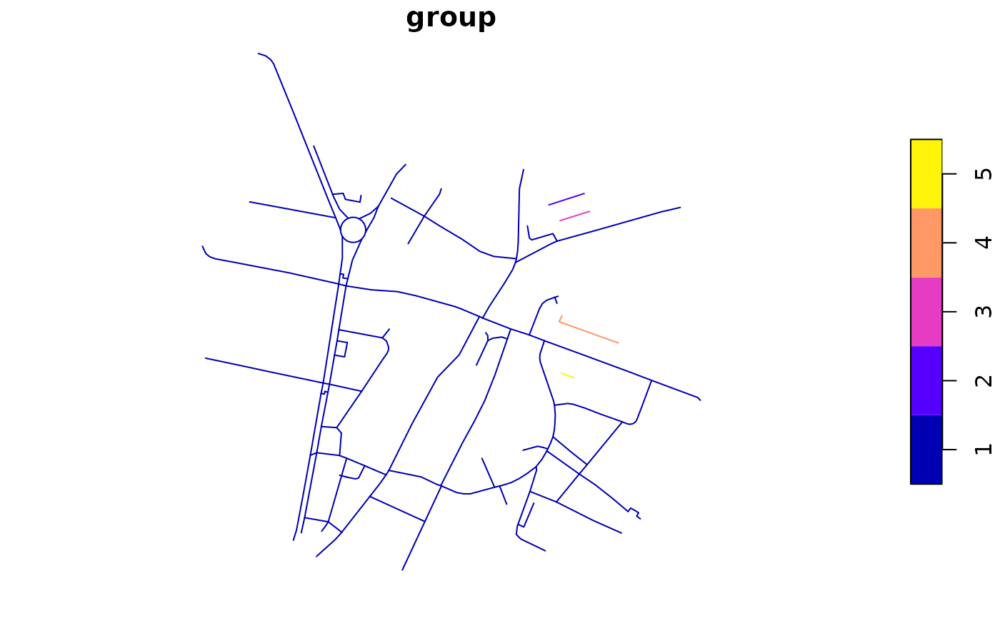
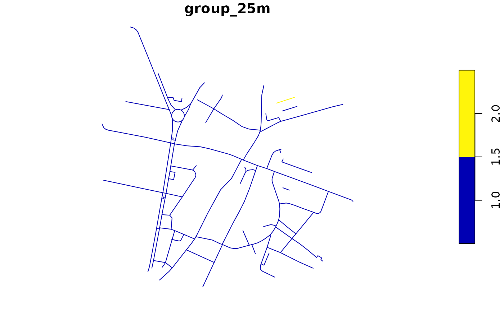
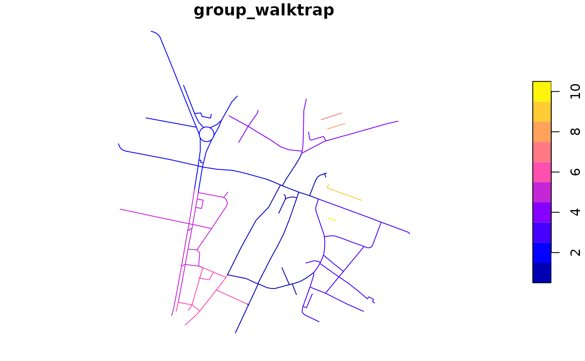
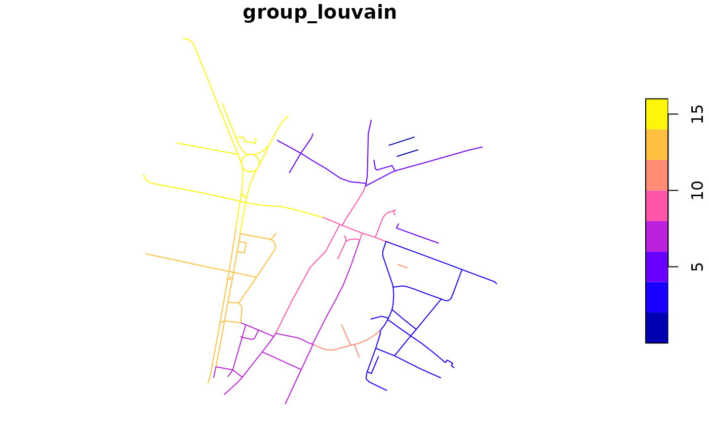
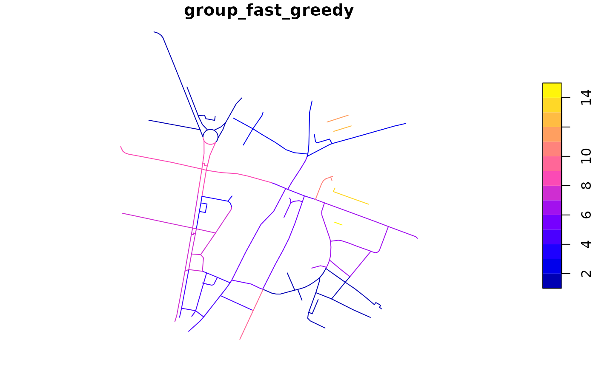
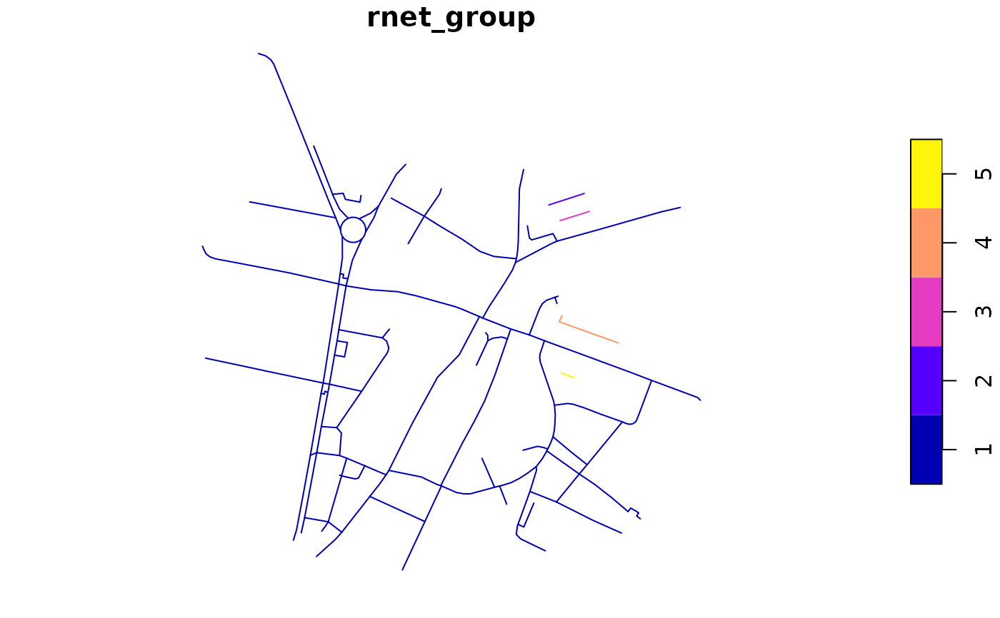

This function assigns linestring features, many of which in an
sf object can form route networks, into groups.
By default, the function igraph::clusters() is used to determine
group membership, but any igraph::cluster*() function can be used.
See examples and the web page
igraph.org/r/doc/communities.html
for more information. From that web page, the following clustering
functions are available:
rnet_group(rnet, ...) # S3 method for default rnet_group(rnet, ...) # S3 method for sfc rnet_group( rnet, cluster_fun = igraph::clusters, d = NULL, as.undirected = TRUE, ... ) # S3 method for sf rnet_group( rnet, cluster_fun = igraph::clusters, d = NULL, as.undirected = TRUE, ... ) # S3 method for sfNetwork rnet_group(rnet, cluster_fun = igraph::clusters, ...)
Arguments
| rnet | An sf, sfc, or sfNetwork object representing a route network. |
|---|---|
| ... | Arguments passed to other methods. |
| cluster_fun | The clustering function to use. Various clustering functions
are available in the |
| d | Optional distance variable used to classify segments that are
close (within a certain distance specified by |
| as.undirected | Coerce the graph created internally into an undirected
graph with |
Value
If the input rnet is an sf/sfc object, it returns an integer vector reporting the groups of each network element. If the input is an sfNetwork object, it returns an sfNetwork object with an extra column called rnet_group representing the groups of each network element. In the latter case, the connectivity of the spatial object is derived from the sfNetwork object.
Details
cluster_edge_betweenness, cluster_fast_greedy, cluster_label_prop,
cluster_leading_eigen, cluster_louvain, cluster_optimal, cluster_spinglass, cluster_walktrap
See also
Other rnet:
SpatialLinesNetwork,
calc_catchment_sum(),
calc_catchment(),
calc_moving_catchment(),
calc_network_catchment(),
find_network_nodes(),
gsection(),
islines(),
lineLabels(),
overline_spatial(),
overline(),
plot,SpatialLinesNetwork,ANY-method,
plot,sfNetwork,ANY-method,
rnet_breakup_vertices(),
sln2points(),
sum_network_links(),
sum_network_routes()
Examples
rnet <- rnet_breakup_vertices(stplanr::osm_net_example) rnet$group <- rnet_group(rnet) plot(rnet["group"])
# mapview::mapview(rnet["group"]) rnet$group_25m <- rnet_group(rnet, d = 25) plot(rnet["group_25m"])


rnet$group_fast_greedy <- rnet_group(rnet, igraph::cluster_fast_greedy) plot(rnet["group_fast_greedy"])
#> Warning: Graph composed of multiple subgraphs, consider cleaning it with sln_clean_graph().